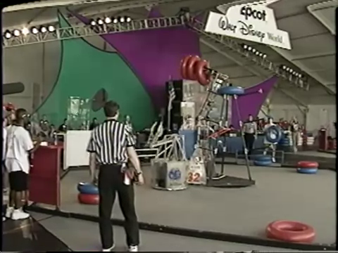
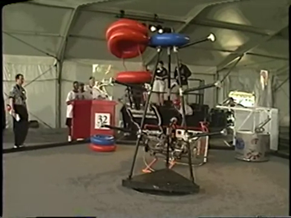

Adam Sears, a chemistry teacher at Kingman High School, lead Team 60 in it's rookie year of 1997. Nineteen students were on the team. Two employees from Ford Motor Company helped mentor the students.
 Team 60 competed at the National Championship held at the Walt Disney World Epcot Center in Orlando Florida. The team placed near the bottom in the rankings.
The Toroid Terror competition was played with three teams at a time on a hexagon shaped field. In two minute matches, three robots and human players scored points by placing the inner tubes onto pegs in the goal, or around the top of the goal. The tubes were color-coded to identify team ownership. Human players were not allowed onto the field, but they were allowed to hand tubes to the robots or throw tubes directly onto the goal.
Major sponsors included the Mohave Generating Station and Ford Motor Company. The students also raised money through car washes held at Taco Bell.